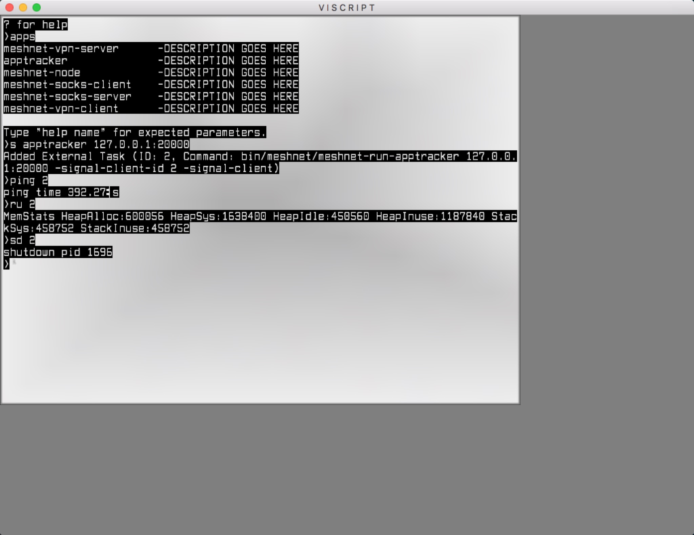
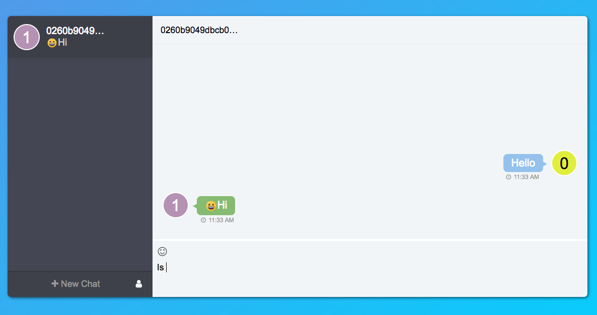

Introduction
Viscript
Viscript is a cross platform CLI, and application launcher and for cluster management eventually. It is based on signal library as a signal server, so it can manage the signal clients, like node and the components in skywire. It can be run in GUI mode or headless mode.
Viscript GUI Screenshot:

We can add app configurations in the config.yaml file, like the meshnet-socks-server:
meshnet-socks-server:
daemon: true
desc: DESCRIPTION GOES HERE
path: bin/meshnet/meshnet-run-socks-server
default_args: []
help: |
[1] Text name of app, must be unique
[2] Node address which app will be talked with. ex 101.202.34.56:9000
[3] Port which socks server will use for connecting with target host. ex 8000
Full Example Command:
start meshnet-socks-server sockssrv0 101.202.34.56:9000 8001
After restart viscript, we can check the applications that can be started by viscript, by command apps.
As you can see in the screenshot, we can start app by using short command s (s apptracker 127.0.0.1:20000) .
Then viscript starts it with a unique sequence id, we can ping(ping), check resource usage(ru) and shutdown(sd) through this id.
Skywire
Skywire is a peer-to-peer alternative network that takes control from ISPs and gives it back to the users. There are several components inside it, node manager, node and applications run on meshnet like vpn client, vpn server, socks client, socks server and so on.
All the components inside Skywire are based on signal library as a signal client. So they can be launched, managed and shutdown by viscript.
Architecture
Architecture Diagram:
+-----------+-------------+
+---------------^-----+ | vpn | socks |
| managed by | +-----------+-------------+
| <-----+ | node |
v | +-------------------------+
<-----+ | node manager |
+-------------------+ | +-------------------------+
| viscript | +-----+ | messenger |
+-------------------+--------------+-------------------------+
| signal |
+------------------------------------------------------------+
| net |
+------------------------------------------------------------+
There are client side and server side applications for each service, like vpn client and vpn server. They runs on Skywire meshnet. As we know, Skycoin is the currency of Skywire, when the user forwards traffic or provide network resources, he or she receives Skycoin. Likewise, when the user consumes network resources or media, he or she spends Skycoin. Once metering and settlement is implemented, Skywire will generate coins for operating the network.
Node, Node Manager and Messenger are the key components of Skywire meshnet. Node is a peer to peer mesh node. Service applications will register to Node, and their traffic will be forwarded by Node. Node Manager manages the routes between nodes in meshnet. Messenger allows users to peer clusters by public key. They are the cornerstones of Skywire meshnet.
Summary
Viscript and Skywire are still under heavy developments. But we have achieved many exciting milestones around the skycoin ecosystem. And we are enjoying and going to unlock the full potential of a free internet in the future!
Sky-Messenger screenshot:
